I'm a thoughtful sensitive soul who feels very strongly about quality tools and experiences. I was largely raised by the internet, my own creativity and collaborative community. These are some of the results.
Simflora
A meditative 3D animation for your browser-tired eyes. Features simple controls for viewing a procedural tree-growth simulation based on Lindenmayer Systems, and a modeled progression of days & seasons. Written entirely in Javascript using the three.js library for rendering. Completed as a team of four in one week.
Inoculus
An interactive implementation of John Conway's Game of Life in Angular. Featuring color-selector and frame-level animation controls.
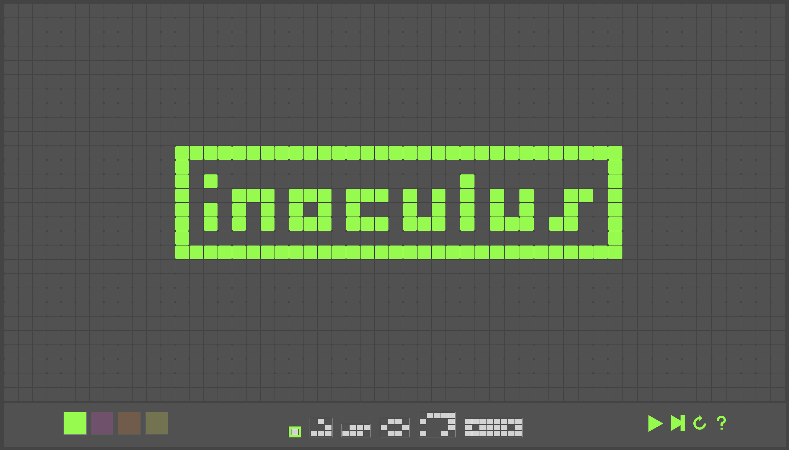
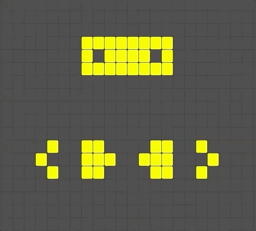
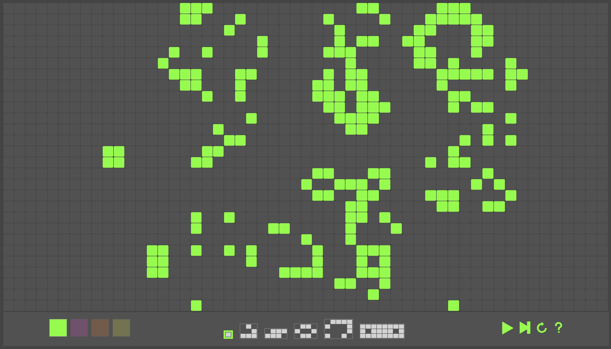
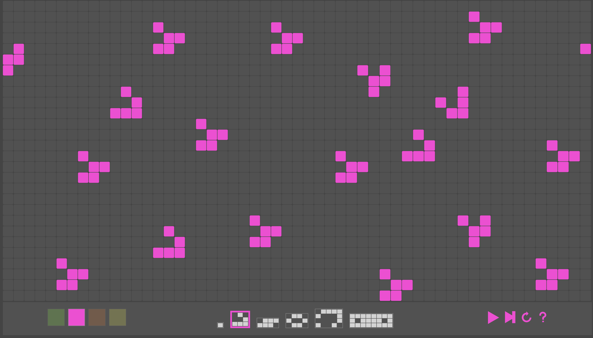
Glamajson
A JSON API with extensive data from RuPaul's Drag Race. Uses web-scraping to populate data endpoints on all the queens, seasons, episodes, and challenges of the show. Built using Ruby on Rails, Nokogiri, PostgreSQL
Eraseer
A multiplayer mobile game built with React Native that uses hacked bluetooth tags for discrete indepedent controllers.
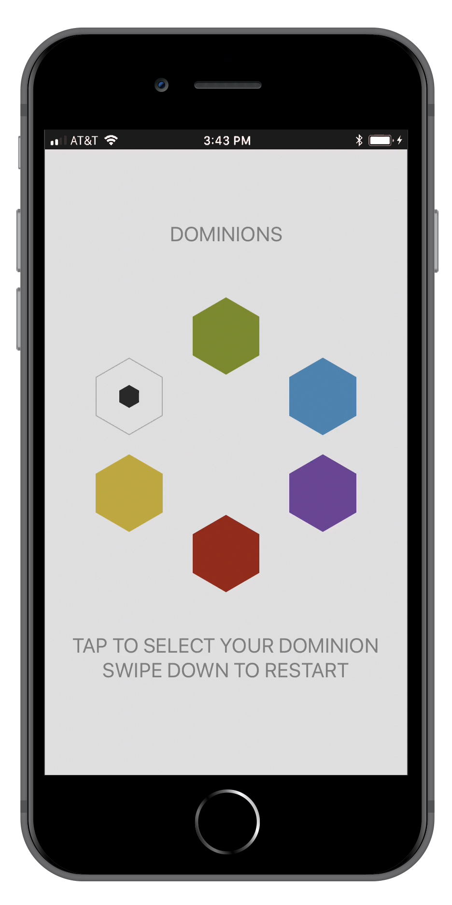
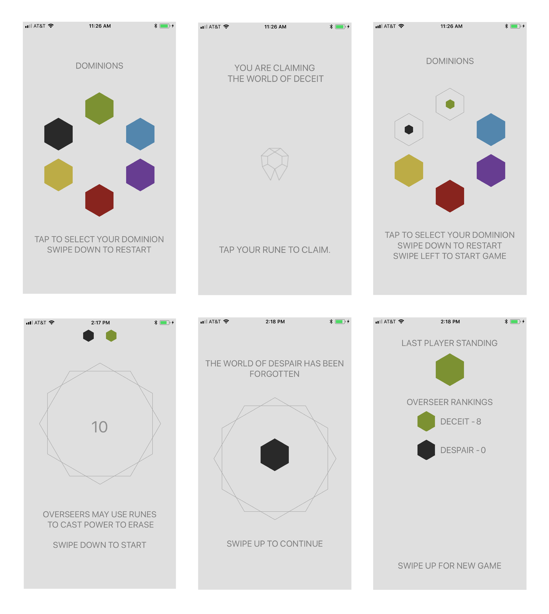
The Space Above
Custom lighting build with thematic programming for a dance show. Built using the Arduino platform, RF remote & receiver & APA102 addressable LEDS. Version control really saved the day on this one 🤓
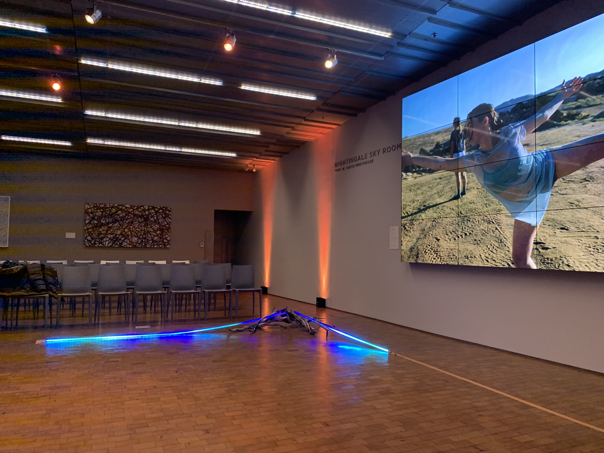
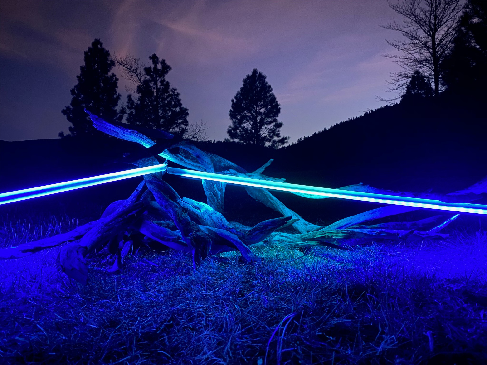
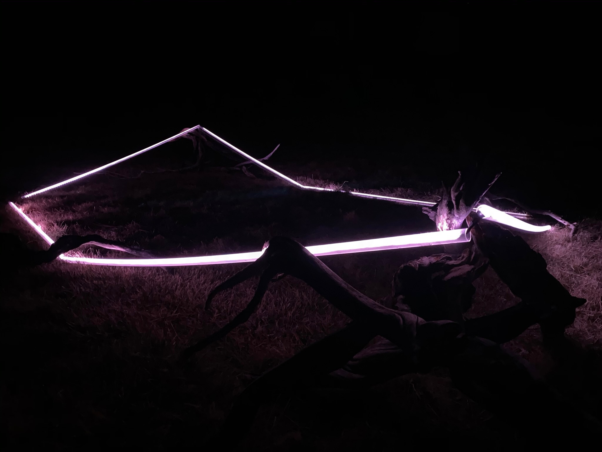
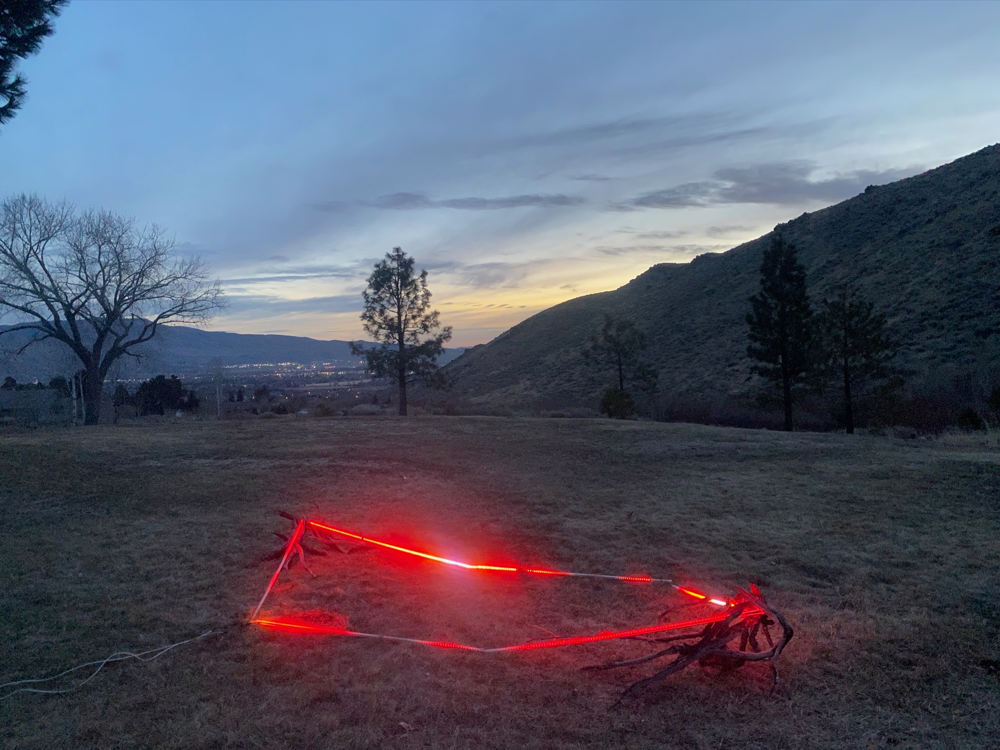
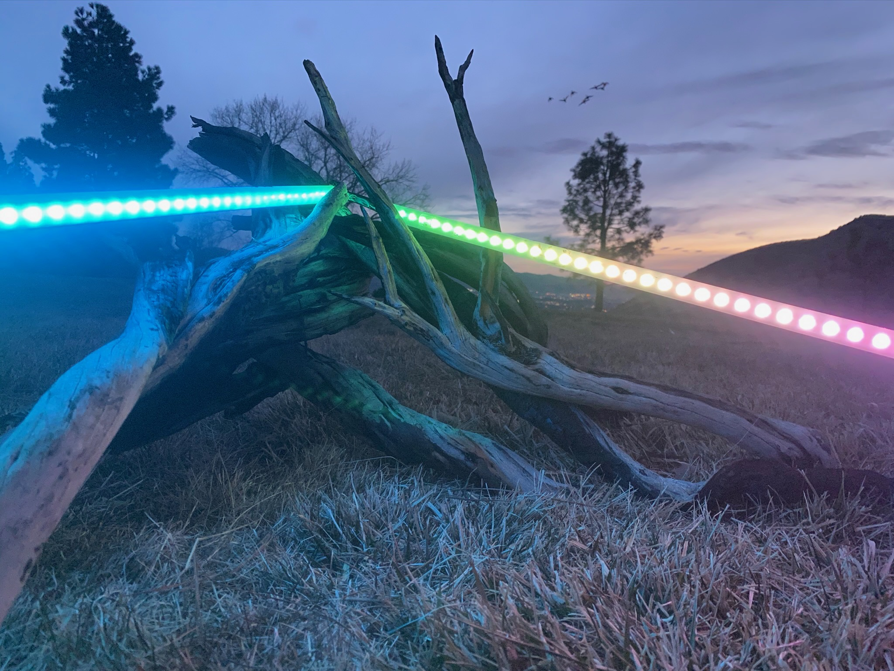
Orfeo
completed as an independent capstone project for my Bachelor's degree, bringing together engineering with design.
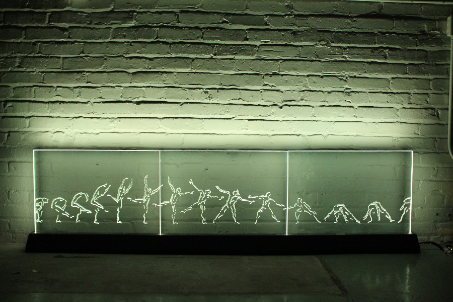
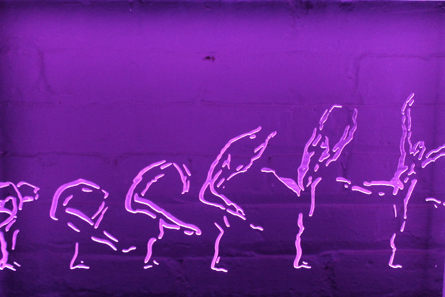
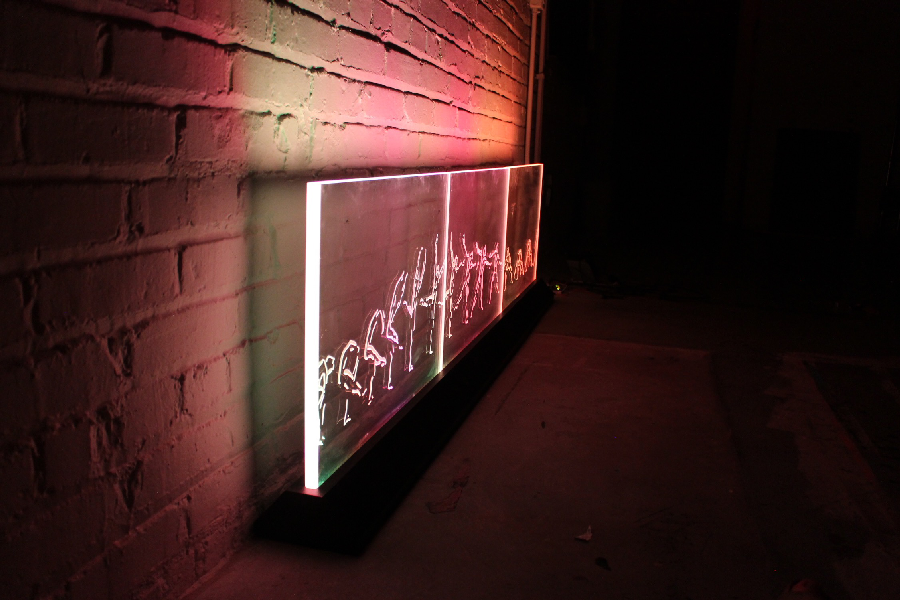
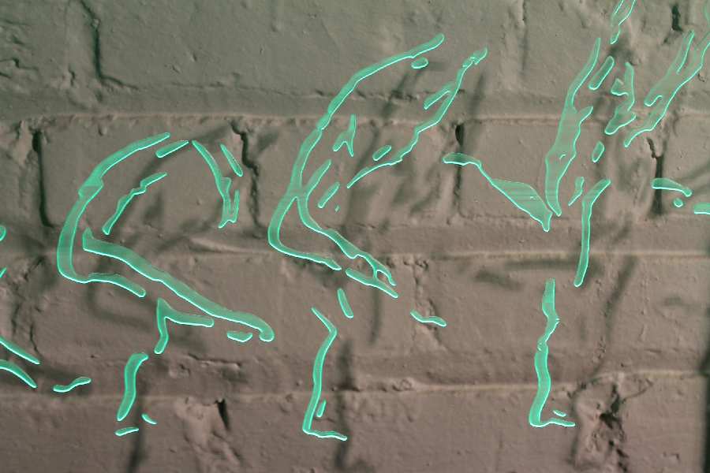
... & prototype - featuring a topographic motif that I designed as a tile-pattern for other digital and print assets.
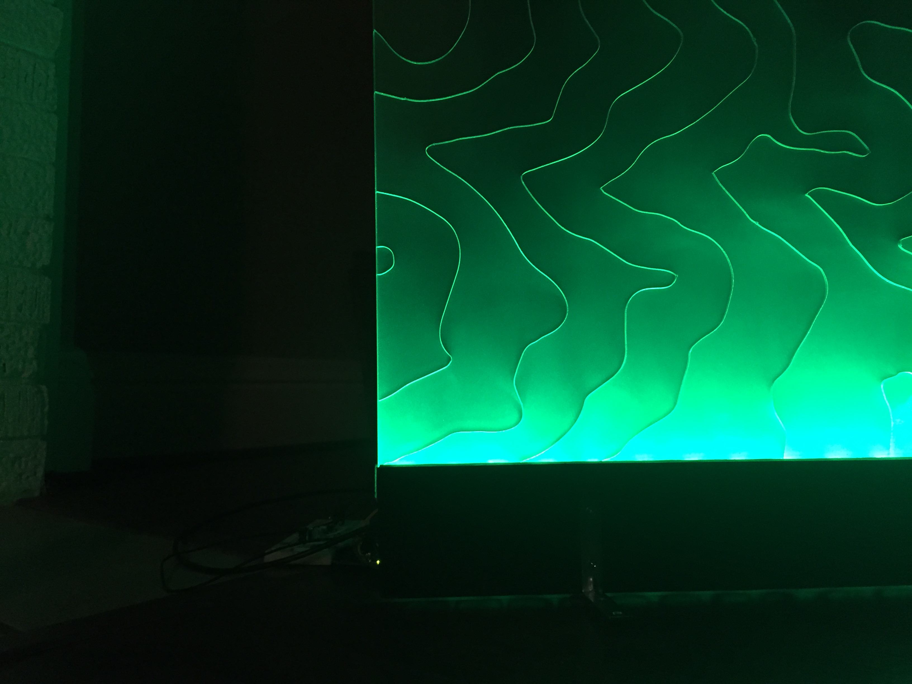
Software is my favorite team sport. More recently, the demands of unhealthy organization left me critically burnt out 🙃 I've now had the privelege of taking a sabbatical after being affected by layoffs and I'm excited to help shape a healthy & high-performing team once again.